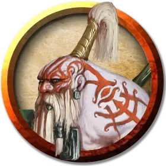

Дварф-альбинос духовный воин
Albino Dwarf Spirit Warrior
Средний Гуманоид (Дварф), любое мировоззрение

Класс Доспеха 13 (шкурный доспех)
Хиты 30 (4к8 + 12)
Скорость 25 футов
| мод | спас | ||
|---|---|---|---|
| СИЛ | 13 | +1 | +1 |
| ЛОВ | 13 | +1 | +1 |
| ТЕЛ | 17 | +3 | +3 |
| мод | спас | ||
|---|---|---|---|
| ИНТ | 12 | +1 | +1 |
| МДР | 14 | +2 | +2 |
| ХАР | 11 | +0 | +0 |
Навыки Восприятие +4, Выживание +4, Скрытность +3
Сопротивление урону яд
Чувства тёмное зрение 60 футов, пассивное Восприятие 14
Языки Общий, Дварфийский
Опасность 1 (200 опыта)
Бонус мастерства +2
Особенности
Дварфская устойчивость. . Дварф совершает с преимуществом спасброски от яда.
Врождённое колдовство. Базовой характеристикой дварфа является Мудрость. Он может накладывать следующие заклинания, не нуждаясь в материальных компонентах:
• 1/день каждое: метка охотника [hunter’s mark], прыжок [jump], бесследное передвижение [pass without trace], разговор с животными [speak with animals], разговор с растениями [speak with plants].
Действия
Ручной топор. Рукопашная или дальнобойная атака оружием: +3 к попаданию, досягаемость 5 футов или дистанция 20/60 футов, одна цель. Попадание: 4 (1к6 + 1) рубящего урона.
Описание
Дварф-альбинос живущий в гармонии с землями Чульта, может привлечь внимание благожелательного духа природы, который наделяет дварфа мощными чарами, предоставляя ему способности к врождённому колдовству. Эти дварфы духовные воины посвящают себя сохранению естественной красоты Чульта и борьбе с неестественными угрозами.
Дварфы-альбиносы Чульта были вынуждены покинуть свои подземные дома из-за вулканической активности, и те, кто не нашли убежища в Порту Нянзару, адаптировались к жизни в джунглях. Они делают броню из шкур динозавров; оружие – из костей динозавров, кремня и дерева; их изделия обильно украшены костьми, перьями, клыками и каменными бусами. Дварфы-альбиносы не забыли, как обрабатывать металл, но им редко попадается этот материал.